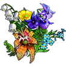
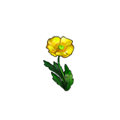
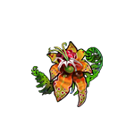
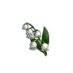
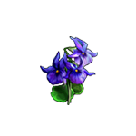

Получено: файл; исходный URL. Иллюстрация в отдельной статье ViveR_9 «Коллекция Цветов»; исходный файл без перекодирования. Авторство отдельно не установлено. Страница: источник.

Коллекция цветов
VK; 31.03.2013- Тип
- Коллекции
- Версия и дата
- VK; 31.03.2013
Элементы коллекции













Данные по источнику · VK · 31.03.2013
Предварительно: один источник; требует сверки. Требуется сверка.
- Состав
- Лютик; цветок папоротника; незабудка; ландыш; фиалка.
- Награда
- 250 опыта и жёлтая краска.
- Где копать
- Шарики, повара, башня, цветочный декор, кусты, вазы, ограды, скамейки, волшебный кролик, беседка.
- Состав (источник Zombie-island)
- Лютик; Цветок папоротника; Незабудка; Ландыши; Фиалка.
- Награда (источник Zombie-island)
- 1 Желтая краска; 250 Опыт.
- Где копать Коллекцию Цветов в Зомби Ферме лопатами
- Повара; Повара с мозгами; Башня; Ангар за зомбаксы; Ангар за монеты; Волшебный кролик; Семейное гнездо; Японский храм; Большая ёлка; Огромная ёлка; Зомби-вертикаль; Флаг Беларуси; Флаг СССР; Ясень; Пальма 1; Пальма 2; Скамейка раз; Скамейка два; Папоротник; Ограда темно-зеленая; Ограда зеленая; Ограда красная; Ограда желтая; Куст темно-зеленый; Куст зеленый; Куст желтый; Медвежонок; Столб раз; Столб два; Старт; Лилии красные; Лилии голубые; Лилии розовые; Лилии белые; Лилии желтые; Тюльпаны красные; Тюльпаны голубые; Тюльпаны розовые; Тюльпаны белые; Тюльпаны желтые; Фиалки оранжевые; Фиалки красные; Фиалки голубые; Фиалки фиолетовые; Плюшевая звезда; Праздничная ночь; Газон; Голубой шар; Красный шар; Желтый шар; Зонтик; Осенний зонт; Летний зонт; Букет из шариков; Телескоп.
- Элементы Коллекции Цветов могут найти Кладоискатели и Звездочеты
- Кладоискатель; Кладоискатель с мозгами; Звездочет; Звездочет за зомбаксы.
- Цветочная коллекция есть в Секретных кладах, ценностях и сокровищах
- Секретный клад; Клубничное; Простое; Шоколадная; Карамелька; Сундук Чудовища; Сюрприз; Пернатый подарок; Букет роз; Букет тюльпанов; Букет мимоз; Варежки; Грильяж; Связка бревен секвойи; Груда черного мрамора; Груда зел. мрамора; Груда бел. мрамора; Связка бревен пал.; Шишка; Посылки от Админа; Коллекционер; Коллекционная посылка; Коллекционный; Халявное; Валентинка; Вишневый торт; Новогодняя елка; Цирковой шатер; Новогодняя елка за дубл; Новогодняя елка за зб.
- Коллекцию Цветов можно найти, колдуя Палочками
- Палочка-выручалочка; Подземный кактус; Букет; Папоротник.
- Коллекцию цветов можно привезти с Пиратских островов
- Пиратский сундук; Остров Сокровищ.
Данные по источнику · браузерная версия; платформа в ответе не уточнена · Дата на странице (формат не уточнён): 18/03/2015
Предварительно: Ответ справочного сайта; достоверность и независимость от других фанатских источников не установлены. Возможны различия редакций и версии.. Требуется сверка.
- Ответ источника
- В Зомби ферме коллекция цветов копается под многими постройками и декорациями. Она состоит из цветов 5 видов: люпин, фиалка, незабудка, ландыш и папоротник. Добыть их можно лопатами зомби-кладоискателей. Она может выпадать из мешков Звездочетов, Кладоискателей и Пасхальных яиц (Клубничное и Простое). Цветочная коллекция может быть в спрятана в сундуках, ценностях, сокровищах. За обмен данной коллекции вы можете получить 250 баллов опыта и 1 ведро желтой краски или использовать ее для выращивания зомби-кактуса. Также собранная коллекция Цветов пригодится для выполнения заданий Мельница, Попались, Девичья память и Одинаковые.
Данные по источнику · браузерная версия; платформа в ответе не уточнена · Дата на странице (формат не уточнён): 13/03/2015
Предварительно: Ответ справочного сайта; достоверность и независимость от других фанатских источников не установлены. Возможны различия редакций и версии.. Требуется сверка.
- Ответ источника
- Коллекция Цветов в Зомби Ферме нужна каждому, кто хочет заработать 250 единиц опыта и банку желтой краски. В состав полного набора входят следующие цветы: ландыши, лютики, фиалки, папоротник и незабудки. Цветочная коллекция может быть выкопана с помощью лопат под огромным количеством зданий (башня, японский храм, зомби-вертикаль и т.д.), растений (папоротник, зеленые и желтые кусты, разноцветные лилии), трибунами, разметками, шарами и так далее. Иногда ее можно получить из мешков кладоискателей, звездочетов или из сундуков сокровищ.
Данные по источнику · браузерная версия; платформа не указана · дата редакции не установлена
Предварительно: Содержимое списка: изображения и колонки могут терять смысл при извлечении текста; отдельная страница и дата не проверены. Подписи alt иногда ошибочны.. Требуется сверка.
- Текст карточки из каталога
- 250 опыта и Жёлтая краска Лютик Цветок папоротника Незабудка Ландыш Фиалка Где копать: Шарики Повара, Башня, Цветочный декор, Кусты, Вазы, Ограды, Скамейки, Волшебный кролик, Беседка
Данные по источнику · Мой Мир (Mail.ru); историческая таблица · дата редакции не установлена
Предварительно: Источник сам использует знаки вопроса; не следует считать такие места подтверждёнными. Возможны изменения патча и платформы; независимость от других справочников не доказана.. Требуется сверка.
- Название в источнике
- Коллекция цветов
- Где копать
- Повара, Башня, Цветочный декор, Кусты, Вазы, Ограды, Скамейки, Волшебный кролик, Беседка
- Награда
- 250 опыта и Жёлтая краска
Данные по источнику · браузерная версия; на сайте указана игра ВКонтакте · дата редакции не установлена
Предварительно: Исторический текст; сильно совпадает со справкой Zommbie.at.ua, независимость не доказана. Отрицания и доступность могут измениться с патчем.. Требуется сверка.
- Где искать по странице «Зомбастики»
- Папоротник, повара, куст темно-зеленый, куст красный, красные лилии, голубые лилии, голубые фиалки, волшебный кролик, пальмы, японский храм.
Данные по источнику · историческая браузерная социальная версия ВКонтакте; редакция неизвестна · дата публикации и последующей редакции не проверена
Предварительно: Фанатский источник; актуальность, вероятности и независимость от других справочников не установлены.. Требуется сверка.
- Состав
- Лютик, Цветок папоротника, Незабудка, Ландыши, Фиалка. ViveR_9 называет лютик; в другом ответе FatalGame упоминается люпин. Независимость справочников не установлена, расхождение сохраняется.
- Обмен
- 1 Жёлтая краска и 250 опыта.
- Получение
- Рулетка Стрекозы Ларисы; букеты мимоз, роз и тюльпанов, Драгоценный цветок, Золотой росток, Зомби-сюрприз, другие ценности и варианты Кладоискателя и Звездочёта.
- Палочки
- Октавий, Пианистка, Пончик-перевёртыш и подземные ресурсы без уточнённых названий.
- Лопаты у друзей
- Зомби-вертикаль, Финиш, многочисленные флаги, Японский храм, Телескоп, Башня, Волшебный кролик, оба Ангара, Семейное гнездо, клумбы, цветы, ограды и другие виды декора; Секретный клад.
- Применение
- При строительстве Зомби-Кактуса и Дерева Мира; в заданиях, перечисленных источником. Количество не указано.
Данные по источнику · историческая браузерная версия, платформа не указана · 10.01.2014 — дата в каталоге; дата редакции материала неизвестна
Предварительно: Фанатский список без вероятностей и уточнения площадки; независимость от других источников не установлена.. Требуется сверка.
- Где искать по списку сайта
- Папоротник, повара, куст темно-зеленый, куст красный, красные лилии, голубые лилии, голубые фиалки, волшебный кролик, пальмы, японский храм
- Оговорка
- Список может относиться к разным условиям, инструментам и периодам игры; не доказывает гарантированное выпадение. Заявления «только» и «невозможно» относятся лишь к времени и версии источника.
Данные по источнику · историческая браузерная игра; площадка не уточнена · 25.02.2013 — дата каталога; редакция неизвестна
Предварительно: Проверен текст в каталоге сайта; вероятность выпадения не указана. Исторические версии и даты могут различаться; списки и награды требуют сверки, независимость сайта от других справочников не установлена.. Требуется сверка.
- Награда в источнике
- 1 жёлтая краска и 250 опыта
- Места в источнике
- Шарики, повара, башня, цветочный декор, кусты, вазы, ограды, скамейки, волшебный кролик, беседка.
Связанные сущности
нет проверенных связей — требуется сверка.
Источники
- прочитано; проверка 2026-11-21
- прочитано: Zombie-island.moy.su; проверка 2026-11-21
- FatalGame: прочитан отдельный ответ; дата на странице 18/03/2015
- FatalGame: прочитан отдельный ответ; дата на странице 13/03/2015
- ZOMBIA: прочитана карточка в списке
- Ссылка на отдельную страницу; отдельно не проверена
- Zombiemail: строка таблицы коллекций; Мой Мир
- Зомбастики: прочитана соответствующая строка; возможная копия другого справочника
- ViveR_9: прочитанная отдельная статья
- zommbie.at.ua: где искать коллекции
- zombi-ferma.ucoz.net: каталог коллекций